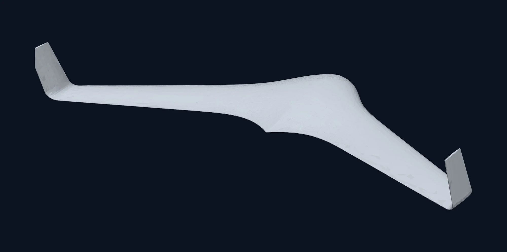
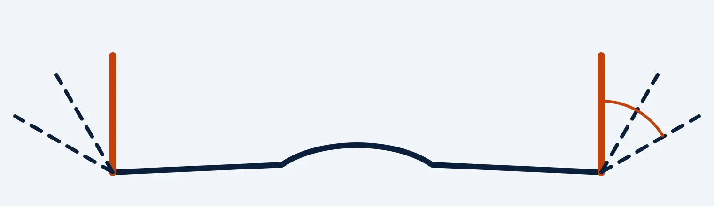
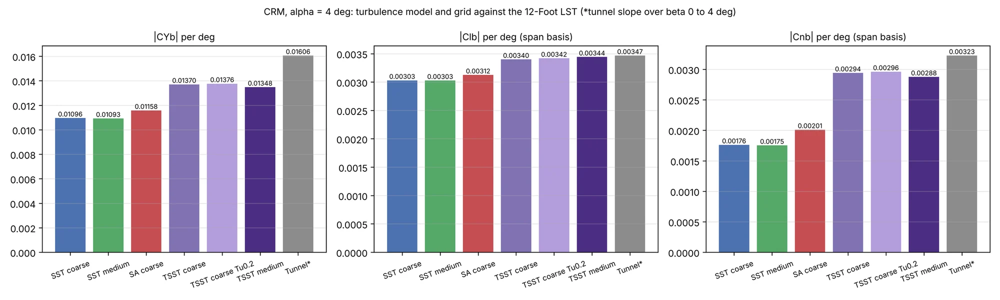
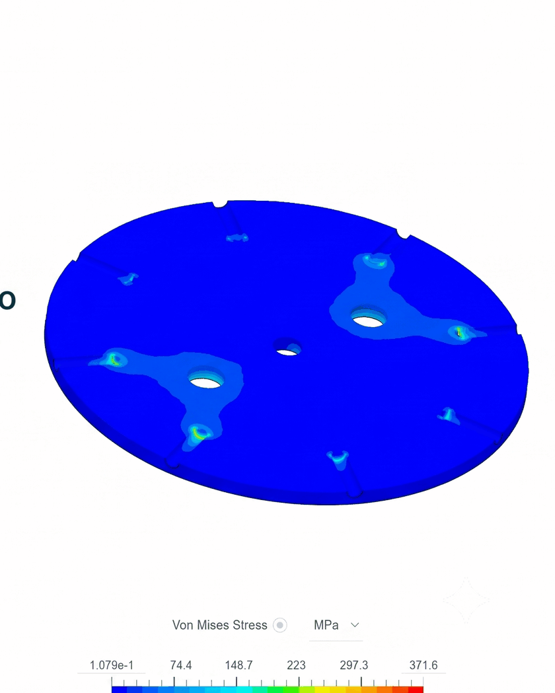
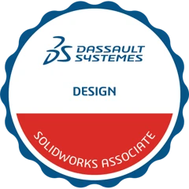

Dubai
Grew up in Dubai and went to The Indian High School, Oud Mehta.
Aero-mechanical engineer at Strathclyde. I size aircraft and engines, simulate them, check the simulation against real data, then build them.
WorkFive projects, 2023 to now
Each preview is the short version. Open one for the full write-up, figures and the numbers behind it.





The aircraft, 1.5 m span, no rudderMove across to scrub01Dissertation, 2026 to 2027Active research
With no fin and no rudder, the wingtip fins are the only thing keeping this tailless UAV pointing straight. I'm measuring how their cant angle sets yaw and roll stability, using a Fluent method I first validated against NASA wind tunnel data.

 Printed chamberWall temperature, regen only
Printed chamberWall temperature, regen only
02Race 2 Space, 2026 to nowIn progress
Conjugate heat transfer CFD and structural FEA of a 3D-printed aluminium, regen-cooled N₂O/IPA engine. The thermal model showed the fuel alone cannot keep the throat from melting, which moved the design to film cooling.
03HPC practice run, October 2026Completed
Before the 3D dissertation runs, I practised the whole workflow on the BWB's tip aerofoil. Eleven angles ran in parallel as an HPC job array, then I checked every coefficient against published XFOIL polars, and found where steady 2D RANS stops being trustworthy.


Original assemblyOptimised bulkhead04StrathAIS, IREC 2026Launched
Airframe design engineer on Strathclyde's supersonic rocket. I designed the interface that carries the main parachute opening load into the motor bay, then used FEA to cut away the material that was doing nothing.


05VIT Chennai, 2023 to 2025Completed
I led four engineers on the airframe of a 10,000 ft high-power rocket: tolerances for CNC parts, bulkhead design, ground ejection tests, and a root-cause fix after an avionics connector let go under heat.
AboutGlasgow, Scotland
I'm a final-year BEng Aero-Mechanical Engineering student at the University of Strathclyde, working across aerodynamics, structural design and manufacture.
I like learning the reasoning behind every process, whatever the field, and working out how to fix what's broken. If I had to name what I enjoy most, it's design optimisation and aircraft development.
This portfolio is a snapshot of that so far: the design work, problem-solving and manufacturing behind what I've built, on my own and as part of the large team efforts behind two rockets.
Every project here went round the same loop. Pick a stage to see the tools and where I used them.

Certified SolidWorks Associate (CSWA)Dassault Systèmes · verify on Credly ↗Grew up in Dubai and went to The Indian High School, Oud Mehta.
BTech Mechanical Engineering. Became airframe lead at Team Ignition.
Pioneer →Transferred into BEng Aero-Mechanical Engineering. Joined StrathAIS.
Nevis flies at IREC: 24,528 ft, past Mach 1, 8th place.
Nevis →Thermal CFD and FEA on a printed rocket engine chamber.
R2S →MH 45 practice sweep, then CFD validated on the NASA CRM.
BWB →Graduate roles in aerodynamics, structures or mechanical design.
Get in touch →